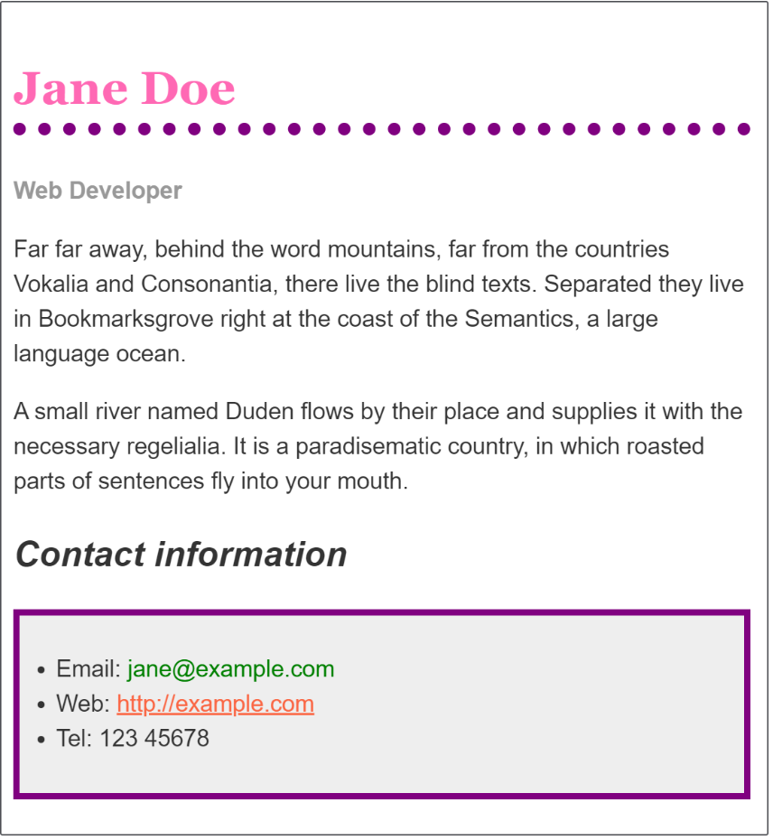

title: CSS 实战
categories:
本文按照 Mozilla 贡献者基于 CC-BY-SA 2.5 协议发布的以下文章改编:
祝贺大家！经过了前面的学习，我们终于来到了实战部分，现在你可以初步搭建一个自己的网站了！
在开始之前，我们有必要了解一下浏览器是怎么解析 CSS 的。
当浏览器展示一个文件的时候，它必须兼顾文件的内容和文件的样式信息，下面我们会了解到它处理文件的标准的流程。需要知道的是，下面的步骤是浏览加载网页的简化版本，而且不同的浏览器在处理文件的时候会有不同的方式，但是下面的步骤基本都会出现。
上面看不太懂也没事，有个概念就可以，方便自己以后调试网站的时候更快地了解到问题。
如果浏览器在加载 CSS 的时候发现了一些错误，比方说属性拼写错误，或者选择器错误，会怎么做？
你也许猜到了：浏览器什么也不做，直接跳过去！就像这个 CSS：
p {
font-weight: bold;
colour: blue; /* color 属性的不规范拼写 */
font-size: 200%;
}
fkccf {
border: 1px solid black;
background-color: lime;
}
在第一个例子，我们使用了不规范的拼写 colour （CSS 只支持美式英语），然后浏览器会直接忽略这个规则，跳过去，于是段落就变成了放大 200% 的粗体，用的默认颜色（一般是黑色）。
第二个例子，我们使用了错误的选择器。这导致这个规则被忽略，包括大括号里面跟着的那些规则。
注意，这里不会有报错，而是直接忽略，所以你不会从控制台或者调试窗口或者什么地方得到这个属性没有被渲染的消息，只能从最后元素的样式去判断。
如果你想对某些上古浏览器进行支持（比如某毒瘤 IE6），那么这种特性会比较有用。比方说某个浏览器是没有 calc 这个函数的，它就会使用上面的 500px，而正常浏览器则会正常解析下面的 calc，并且显示出来。
.box {
width: 500px;
width: calc(100% - 50px);
}
现在，我们正式开始实战。
我们强烈建议你在计算机上进行实际操作，毕竟实操和看看是有很大区别的。我们此处的例子是从 MDN 的对应章节（MDN -> 学习 Web 开发 -> CSS -> CSS 第一步 -> 运用你的新知识，https://developer.mozilla.org/zh-CN/docs/Learn/CSS/First_steps/Using_your_new_knowledge）里面摘出来的，你可以选择从那里直接复制代码，然后照着链接里面的说明进行操作。
现在你应该可以理解下面的 html 和 css，以及它们显示出来的样子。新建一个文件夹，在里面建立下面这两个文件，再在浏览器里面打开 index.html ，看看是不是显示出图片里面的样子。
index.html
<!doctype html>
<html lang="en">
<head>
<meta charset="utf-8">
<title>Formatting a biography</title>
<link rel="stylesheet" href="styles.css">
</head>
<body>
<h1>Jane Doe</h1>
<div class="job-title">Web Developer</div>
<p>Far far away, behind the word mountains, far from the countries Vokalia and Consonantia, there live the blind texts. Separated they live in Bookmarksgrove right at the coast of the Semantics, a large language ocean.</p>
<p>A small river named Duden flows by their place and supplies it with the necessary regelialia. It is a paradisematic country, in which roasted parts of sentences fly into your mouth.
</p>
<h2>Contact information</h2>
<ul>
<li>Email:
<a href="mailto:jane@example.com">jane@example.com</a>
</li>
<li>Web:
<a href="http://example.com">http://example.com</a>
</li>
<li>Tel: 123 45678</li>
</ul>
</body>
</html>
styles.css
body {
background-color: #fff;
color: #333;
font-family: Arial, Helvetica, sans-serif;
padding: 1em;
margin: 0;
}
h1 {
color: #375e97;
font-size: 2em;
font-family: Georgia, 'Times New Roman', Times, serif;
border-bottom: 1px solid #375e97; /*下边框，从左到右三个依次是边框粗细大小，
边框样式和颜色。比如要换成点线边框的样式就把 solid 换成 dotted*/
}
h2 {
font-size: 1.5em;
}
.job-title {
color: #999999;
font-weight: bold;
}
a:link, a:visited {
color: #fb6542;
}
a:hover { /*鼠标悬停*/
text-decoration: none; /*文本修饰: none*/
}
现在你可以尝试对它进行一系列的操作，看看它会变成什么样子。比方说你可以这么做（不知道怎么做的往前翻，都讲过。这里是个练习，不提供示例代码）：
hotpink ，将一级标题设定为粉红色。purple ，为标题添加 10 像素宽的点线边距（注释里面有提到的）font-style: italic）。#eeeeee 为联系人列表中的超链接添加背景颜色和一个 5 像素宽的紫色加粗边框 (border)。使用一些内边距 (padding) 属性，拉开正文与外边距的距离。然后就会变成这样

“好像内容是结束了？那我是不是可以自己搭建一个网站了？”
如果说是搭建一个初步的网站，那么的确是可以了。但是有的网站好像不是那么简单，比方说导航栏，侧栏，底栏这些，要怎么办？下面我们会举出更多例子。
在更下面我们会把更加综合地讲解一下 HTML 和 CSS 的合作的例子，给大家一些网站的例子去讲解。